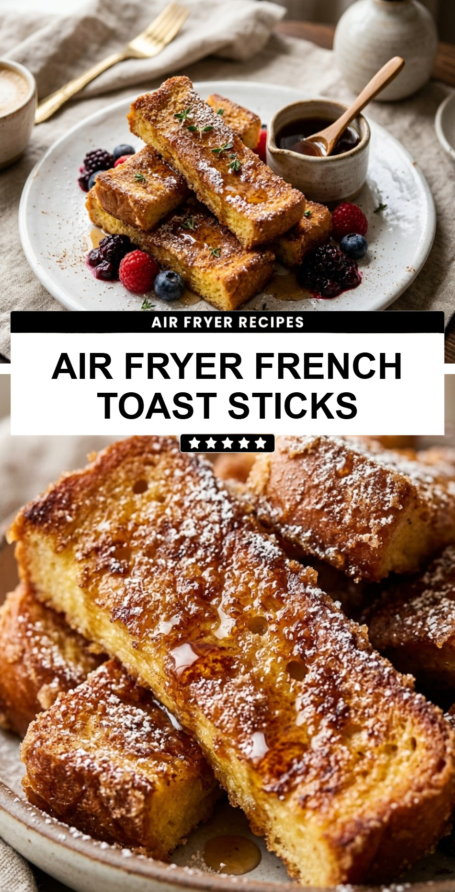

Air Fryer French Toast Sticks
October 19, 2026

Imagine waking up to the smell of warm cinnamon and toasted bread without the mess of a frying pan. Air Fryer French Toast Sticks are the ultimate breakfast hack for busy mornings. They offer that perfect contrast of a crunchy, golden-brown exterior and a soft, custard-like center. Plus, they are much easier to handle than traditional French toast slices, making them perfect for dipping.
Recipe Information
Prep Time: 10 minutes
Cook Time: 8 minutes
Total Time: 18 minutes
Servings: 4
Difficulty Level: Easy
Nutrition Information
Calories per serving: 285 kcal
Protein: 9g
Carbohydrates: 42g
Fat: 10g
Fiber: 2g
Sugar: 12g
Sodium: 340mg